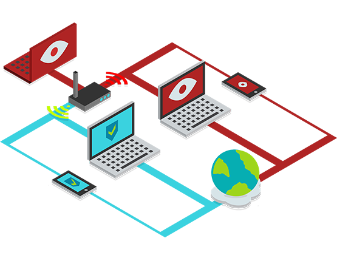
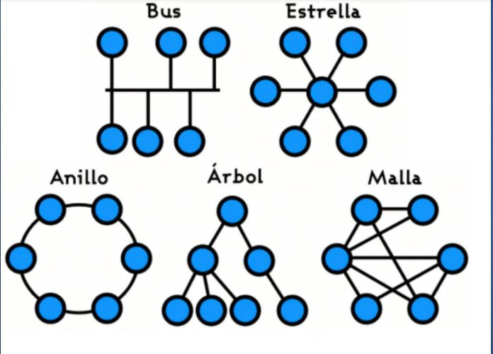
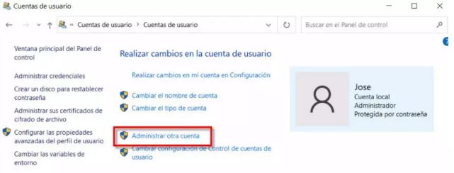
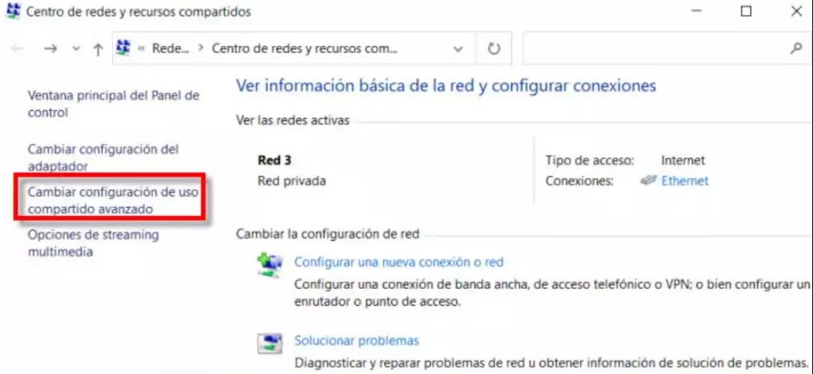
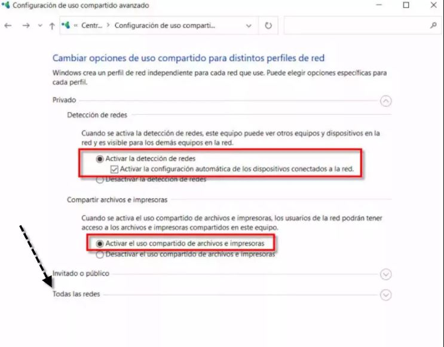
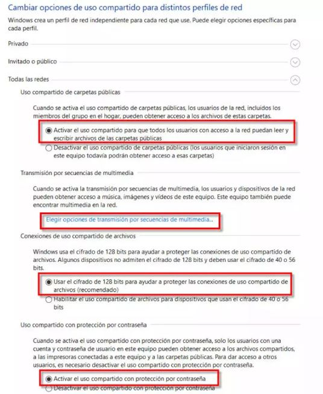
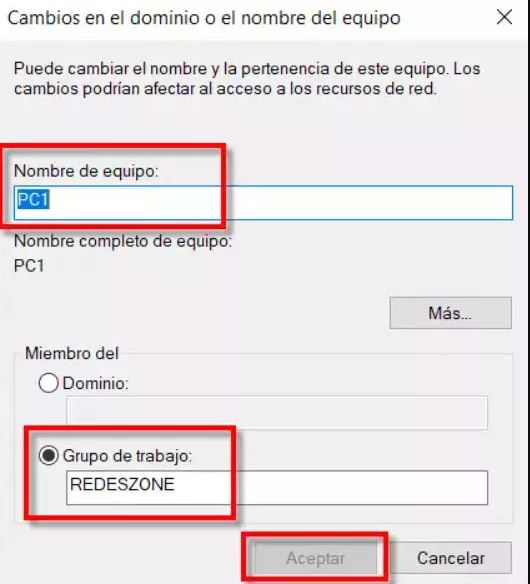

La configuración de red es el proceso de asignar configuraciones, políticas, flujos y controles de red.
• Bus: todos los nodos de la red están conectados a lo largo de una ruta lineal. Esta topología sencilla suele usarse en redes pequeñas.. • Anillo: los nodos están conectados en círculo, y el tráfico puede fluir en una dirección o en ambas. Las redes en anillo tienden a ser rentables, pero no tan escalables ni estables como otros tipos de topología de red.. • Estrella: un nodo central se conecta a todos los demás nodos de la red. Esta es una topología común y estable que se usa a menudo para redes de área local (LAN).. • Malla: los nodos están vinculados de tal manera que existen múltiples rutas entre nodos..Este tipo de topología aumenta la resistencia de la red, pero también su coste. Una red puede estar completamente mallada (todos los nodos se conectan a todos los demás) o parcialmente mallada (solo algunos nodos tienen múltiples conexiones a otros nodos).. • Árbol (leaf-spine): varias topologías de estrella están conectadas juntas en una configuración de estrella más grande.. • Híbrida: se utiliza una combinación de distintas topologías dentro de una misma red.
Puesta en marcha del router
• Aquí conviene empezar por leer las instrucciones de nuestro nuevo router. Luego, cuando tengamos claro dónde están los puertos Ethernet, el resto
de las conexiones y botones, ya estamos listos para comenzar. Nuestra primera tarea va a ser localizar la fuente de alimentación del router,
introducirla en el conector de alimentación y después enchufarlo.
• A continuación, esperamos aproximadamente un par de minutos, hasta que veamos que se inicia de forma correcta. Seguidamente l lega el momento
de añadirle el cableado que necesitamos para acceder a Internet. Habitualmente en los routers este cableado se inserta en la parte trasera.
• Dependiendo de que el router sea de fibra óptica o ADSL los pasos van a variar. En el caso de ser una sustitución de router una buena idea antes de
empezar a hacer nada es anotar cómo están colocados los cables o hacer una fotografía. Seguidamente procederemos a la colocación del cableado de
la siguiente forma:
• Si se trata de una conexión de fibra óptica con ONT conectamos el cable de red en el puerto del que está etiquetado como «Internet» o «WAN».
Luego ese cable se inserta en el puerto Ethernet correspondiente de la ONT.
• En el caso de un router de fibra con ONT integrado, conectamos el latiguillo de fibra a nuestra roseta de fibra óptica. Un ejemplo son los HGU de
Movistar.
• Si se trata de un router ADSL, conectamos un cable RJ-11 en el puerto DSL del router y luego lo insertamos en la roseta telefónica. En el caso de que
necesitemos añadir un teléfono hay que añadirle los microfiltros correspondientes.
• Terminamos añadiendo un cable de red Ethernet a nuestro portátil u ordenador para configurarlo. También se podría hacer por Wi-Fi pero tendrías
que meterle tu red Wi-Fi predeterminada. El inconveniente que tiene hacerlo por Wi-Fi es que luego cuando cambies los parámetros por seguridad,
vas a tener que cambiar la conexión.
Accede a la configuración web de tu router
• Normalmente, la mayoría de routers tienen debajo una
pegatina con todos los datos de acceso.
• Una cosa que nos puede dar problemas al configurar tu red
doméstica desde cero es tener el TCP/IP de Windows en
manual. Esto último es ideal para establecer una IP fija
local para usar programas P2P o crear un servidor de algún
tipo. Como el router viene de fábrica con el DHCP
habilitado y puede asignar las IP locales, lo mejor será
poner el TCP/IP de Windows en automático.
• Para ello en Windows 10 o Windows 11 seguiremos estos
pasos:
• Vamos a Menú de inicio.
• Escribimos Ver conexiones de red y pulsamos enter.
• Seleccionamos nuestra conexión Ethernet o Wi-Fi (si es el
caso) y con el botón derecho pulsamos en Propiedades.
• Hacemos doble clic en Protocolo de Internet versión 4.
Vamos a «Menú de inicio, Panel de control, Cuentas de usuario«, y hacemos clic en otro acceso que se llama «Cuentas de usuario» y terminamos pulsando en «Administrar otra cuenta«.
• Agregar un nuevo usuario en configuración.
• Agregar otra persona a este equipo.
• No tengo los datos de inicio de sesión de esta
persona.
• Agregar un usuario sin cuenta Microsoft ya
que vamos a crear una cuenta local.
• A continuación, elegimos un nombre de
usuario y una contraseña. Al terminar
veremos todos los usuarios junto al que
acabamos de crear. Seguidamente si hacemos
doble clic en el nombre
que elegiste mostrará nuevas opciones.
• Aquí lo que vamos a hacer pulsar es Cambiar
el tipo de Cuenta. Esto nos va a permitir elegir
entre un usuario estándar con menos
permisos o uno con todos que sería la cuenta
de administrador.
Nuestro siguiente paso es ir a Menú
de inicio, Configuración, Red e
Internet. Después tenemos que ir a la
sección Ethernet si estamos
conectados por cable de red o al WiFi si lo estamos inalámbricamente. Ya
dentro haríamos clic sobre el icono de
la conexión actual.
• En este caso hay que seleccionar perfil
de red Privada que es el que se utiliza
para las redes domésticas, del trabajo
u otro sitio de confianza.
Volvemos otra vez a Red e Internet, escogemos el apartado Estado, y dentro de configuración avanzada pulsamos en Centro de redes y recursos compartidos. Luego hacemos clic en Cambiar configuración de uso compartido avanzado
Entonces, procedemos a configurar tu red de la siguiente forma:
Seguidamente pulsamos en Todas las redes para desplegar más opciones y configuramos así:
Para que los equipos puedan funcionar en
red, tienen que tener un nombre y
pertenecer al mismo grupo de trabajo. Para
ello, seguiremos estos pasos Menú de
inicio, Panel de control, Sistema y
seguridad, Sistema y entonces haremos clic
en Configuración avanzada del sistema.
• Después iremos a la pestaña Nombre del
equipo, donde añadiremos una Descripción
del equipo, hacemos clic en Aplicar y
pulsamos en el botón Cambiar.
Es escribir un Nombre de equipo, un Grupo de trabajo y pulsar Aceptar. Recorda que todos los ordenadores deben pertenecer al mismo grupo de trabajo. Una vez hecho, toca reiniciar ese equipo para que los cambios surtan efecto.
